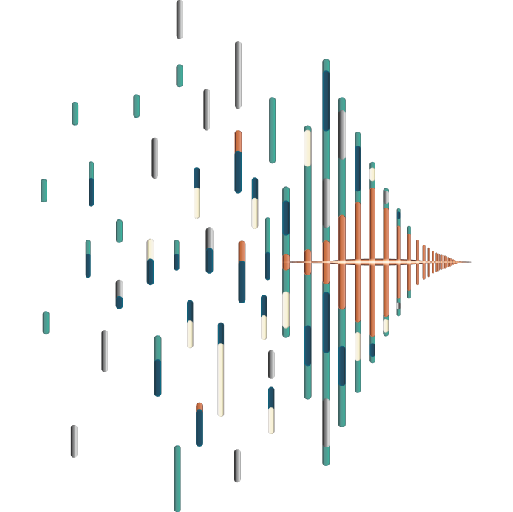

In the Seat, Not Beside It
We have held the roles our clients hold, and we answer “who approved this, and on what evidence?” the way people who have had to answer it do.

COMPLEANT PARTNERS LLCWe guide regulated life sciences companies in closing gaps — turning complexity into competency, and competency into clarity. Intelligence you can trust.
Start a Readiness AssessmentInteract to explore
Regulatory Risk
Find where the exposure actually is across the quality system, compliance, and regulatory intelligence — an inventory of innovation use cases, GxP classification, risk ranking, data integrity review, and a gap snapshot with a recommended roadmap.
For the quality leader
For the gatekeepers
Complexant Partners is a boutique practice with roughly sixty years of combined experience in the exact roles our clients hold. Personal involvement from both principals, not a bench of juniors — and the ability to say yes to fast-moving innovation and still be able to prove it.
We have held the roles our clients hold, and we answer “who approved this, and on what evidence?” the way people who have had to answer it do.
Both founders stay on the engagement from first call through evidence delivery. No handoff to juniors once the work begins.
Governance, validation strategy, and documentation built to hold up under inspection — not just to close a finding.
Fit-for-purpose for where you actually are — paper-based systems through predictive analytics. Adopt, then adapt.
Regulated modalities and the systems that carry them — from paper-based quality systems through automation and AI.
Hover to explore
Most relationships begin with a fixed-scope, fixed-fee readiness assessment. From there, the work moves in sequence.
01
Fixed scope, fixed fee. We inventory the innovation use cases in play, classify them against GxP, and rank the risk by system and data type.
02
A clear read on where exposure actually lives, with a phase-appropriate roadmap you can take to the people who sign off on spend.
03
Governance frameworks, validation strategy, and the documentation trail — built so the evidence stands on its own in an inspection.
04
Performance and drift monitoring, periodic review, and change planning, so the system stays qualified as it evolves.
“You stay pilot in command.”
You decide and you fly — we guide, advise, verify, and equip.
Alexandra Pieper and Anthony Davis founded Complexant Partners as equal partners. Both are on every engagement.
Co-Founder & Partner
Co-founder and equal partner, working across quality, regulatory, and validation for regulated life sciences companies.
Full biography and CV are part of the launch content package and will be published here.
Co-Founder & Partner
Co-founder and equal partner, working across quality, regulatory, and validation for regulated life sciences companies.
Full biography and CV are part of the launch content package and will be published here.
Start with a fixed-scope, fixed-fee readiness assessment — or just tell us what is keeping the question open.